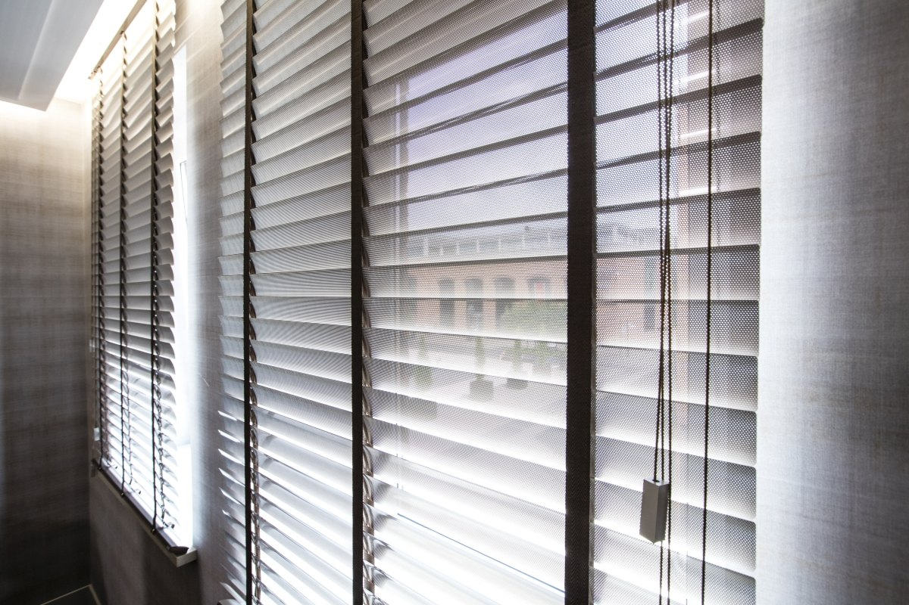
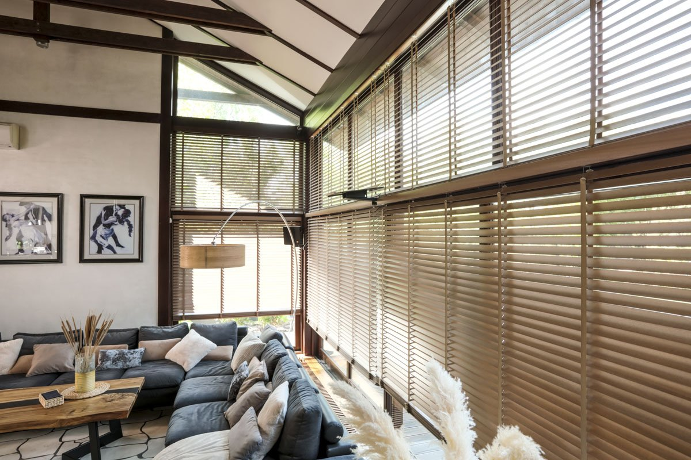
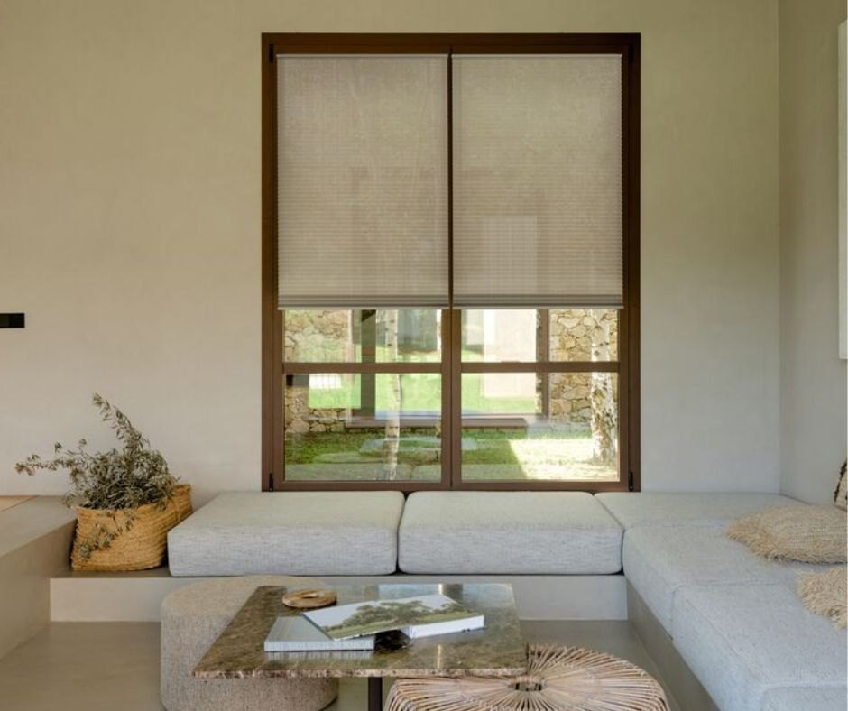
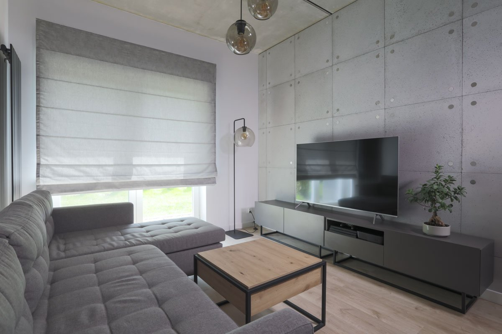
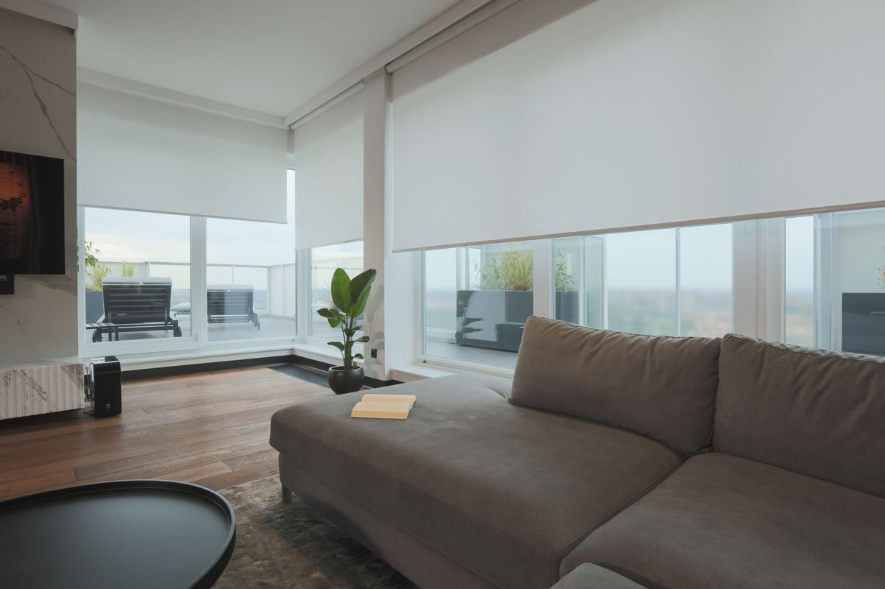
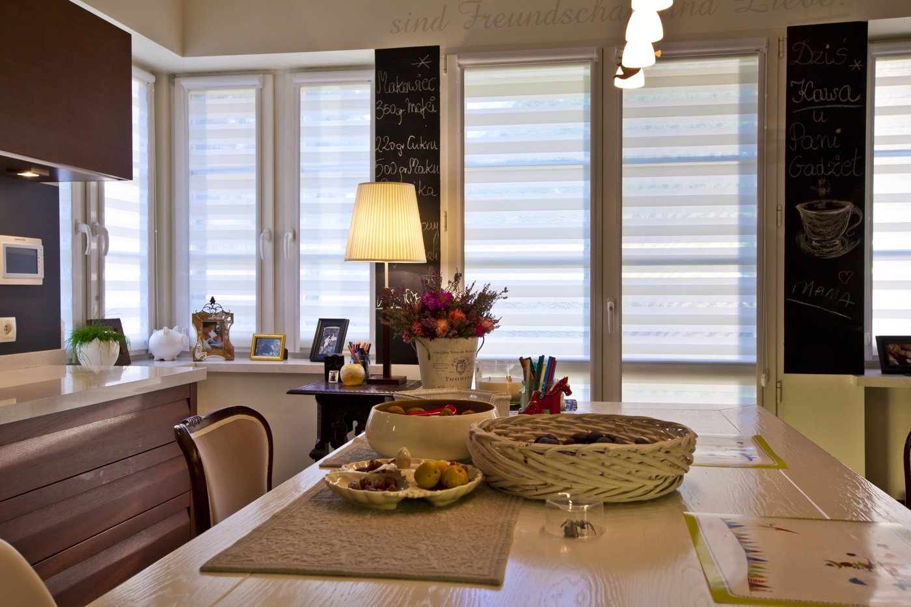
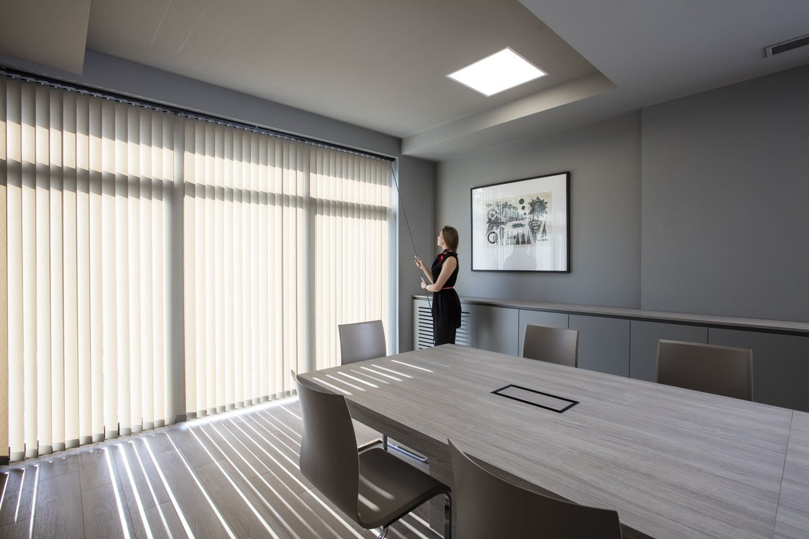

Dobierz rozwiązanie do swojego wnętrza, wybierając spośród różnych materiałów, kolorów i sposobów regulacji światła.







Produkcja pod wymiar każdej wnęki i skrzydła
Od pełnego zaciemnienia (blackout) po delikatne rozproszenie
Osłony wewnętrzne produkujemy od 30 lat
Rolety, plisy i żaluzje różnią się sposobem regulacji światła, budową oraz wyglądem. Rolety materiałowe tworzą jednolitą powierzchnię tkaniny i pozwalają osłonić okno, plisy można przesuwać zarówno od góry, jak i od dołu, a żaluzje umożliwiają precyzyjne sterowanie ilością światła dzięki regulowanym lamelom. Wybór zależy od oczekiwanego poziomu zaciemnienia, prywatności i stylu wnętrza.
W salonie świetnie sprawdzą się rolety materiałowe, rolety rzymskie lub żaluzje, które pozwalają dopasować ilość światła do potrzeb i stylu wnętrza. Do sypialni warto wybrać rolety zaciemniające, zapewniające komfortowy sen i większą prywatność. W kuchni najlepiej sprawdzą się praktyczne osłony, takie jak plisy czy żaluzje aluminiowe, które ułatwiają regulację światła i codzienną pielęgnację. W każdym pomieszczeniu warto dopasować osłonę do warunków i sposobu użytkowania.
Kolor osłon wewnętrznych warto dopasować do odcienia okien, ścian, podłogi i mebli. Jasne tkaniny optycznie rozjaśniają wnętrze, a ciemniejsze mogą stanowić wyrazisty akcent aranżacyjny. W nowoczesnych pomieszczeniach dobrze sprawdzają się szarości, biele i beże, natomiast żaluzje drewniane wprowadzają naturalne ciepło.
Tak, wiele osłon wewnętrznych można zamontować bez wiercenia, np. przy użyciu specjalnych uchwytów zakładanych na ramę okna. Dostępność montażu bezinwazyjnego zależy od rodzaju osłony, konstrukcji okna oraz wybranego systemu mocowania.
Do kuchni i łazienek polecamy żaluzje aluminiowe, które dobrze sprawdzają się w pomieszczeniach narażonych na wilgoć. Są łatwe w czyszczeniu, praktyczne i pozwalają wygodnie regulować ilość światła wpadającego do wnętrza.
Do okien dachowych można wybrać rolety materiałowe z jednolitą tkaniną lub plisy, które pozwalają osłonić wybraną część okna.
Osłony wewnętrzne dostępne są w bogatej gamie kolorów i wzorów – od klasycznych, stonowanych odcieni po bardziej wyraziste barwy i ciekawe struktury. Na miejscu oferujemy szeroki wybór tkanin i wzorników, dzięki którym można dopasować osłony do okien oraz wystroju wnętrza. Kolekcje są regularnie aktualizowane, dlatego warto odwiedzić nasz salon i zobaczyć aktualnie dostępne propozycje.
Skontaktuj się z nami — doradzimy technicznie i przygotujemy kalkulację cenową.